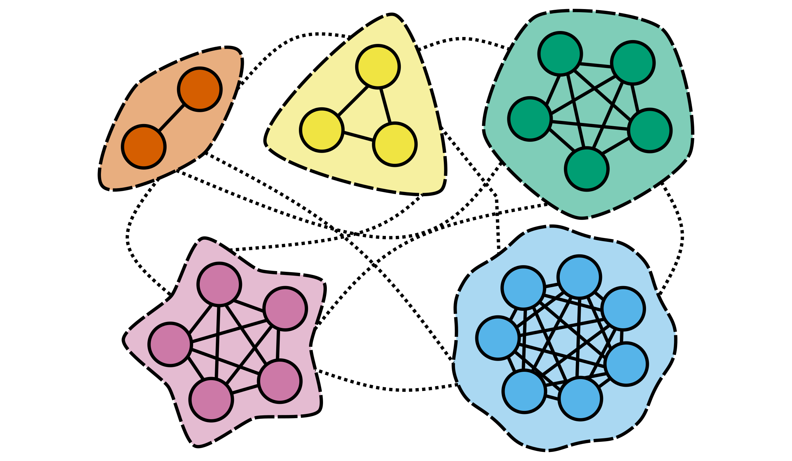

This blog post is about low-rank approximations of dynamical systems.
Motivation
Many dynamical systems in the real world, such as formation of storms or protein-folding, are far too complex to describe in full. We turn to low-rank approximations of dynamical systems in order to predict these systems.
Formalism
A matrix \(M\) has a rank of \(a\) if it has \(a\) linearly independent column vectors. We may state that \({rank}(\cdot)\) is a function that returns an integer \({rank}(M)\) that counts the number of independent column vectors.
We claim that a stochastic transition matrix \(P\) can be approximated with a low-rank stochastic matrix \(Q_{m \times m}\) by combining the states of \(P_{n \times n}\) into “almost” communication classes. The formula
$$Q = K^{-1} P^t K$$
claims that \(Q\) is the class stochastic matrix of state transition matrix \(P\) at time \(t\) using the classification matrix \(K_{n \times m}\). We replace the matrix inverse \(K^{-1}\) with the Moore-Penrose pseudoinverse: \(K^+ \rightarrow K^{-1}\), to get a proper working formula.
Inversely, we may approximate \(P\) using the form:
$$P^t \approx K Q K^+ \implies P \approx K Q^{\frac{1}{t}} K^+$$
This idea is important for two reasons:
- A small computer can predict a large system’s macroscopic trends with high accuracy.
- A small computer must stop predicting unimportant features to be efficient.
AI predicting systems fail when they waste compute predicting noise. They need to move away from predictin measurements and towards predicting states.
We assume that \(m << n\), or that \(m\) is much smaller than \(n\), when we are making our low-rank approximation.
then the states their future distributions will sufficiently correlated so as to be impossible to determine the original state accurately.
Representation
Consider the following diagram of a Markov chain:

We have five classes in which states “strongly communicate” within each class and “weakly communicate” between classes.1 There are a total of 22 states, but the states within each class have a future distribution that is “almost uniform” within each class at some future time\(t\).
Suppose that we are interested in the protein-folding problem in biology. There are a lot of states that appear similar, but they can transition between five possible states in which they are locally stable. These meta-stable Markov chains are the implicit result of classification.
Coding: Estimated Number of Classes
We code the prior diagram in R
library(MASS)
library(ggplot2)
library(LaplacesDemon)
library(stats)
Let us construct \(P\) using \(k\) reducible Markov chains.
N <- 22
A.class = c(rep(1/2, 2), rep(0, N-2))
B.class = c(rep(0,2), rep(1/3, 3), rep(0, N-5))
C.class = c(rep(0,2), rep(0, 3), rep(1/5, 5), rep(0, N-10))
D.class = c(rep(0,2), rep(0, 3), rep(0, 5), rep(1/7, 7), rep(0, N-17))
E.class = c(rep(0,2), rep(0, 3), rep(0, 5), rep(0, 7), rep(1/5, 5))
P = matrix(c(rep(A.class, 2), rep(B.class, 3), rep(C.class, 5),
rep(D.class, 7), rep(E.class, 5)), N, N)
We introduce some helper functions into our code:
matrix.power <- function(A, n) { # only works for diagonalizable matrices
e <- eigen(A)
M <- e$vectors # matrix for changing basis
d <- e$values # eigen values
return(M %*% diag(d^n) %*% solve(M))
}
Norm.2 = function(v){
return(sqrt(sum(v^2)))
}
normalize.rows <- function(A){
for(i in 1:dim(A)[1]){
A[i, ] = A[i, ] / sum(A[i, ])
}
return(A)
}
classes.estimate <- function(P){
N = dim(P)[1]
Theta = matrix(0, N, N)
for(i in 1:N){
for(j in 1:N){
a = P[i,]; b = P[j,]
Theta[i, j] = sum(a * b / (Norm.2(a) * Norm.2(b)))
}
}
k = N^2 / sum(Theta)
return(k)
}
We write use ggplot line to visualize our change in the estimated number of classes:
k.ests = c()
for(n in 0:20){
k.new = classes.estimate(Re(matrix.power(P, n)))
k.ests = c(k.ests, k.new)
}
ggplot() + geom_line(aes(x=0:20, y = k.ests))
These are the numerical values of our number of estimated classes.
k.ests
## [1] 22.000000 4.321429 4.321429 4.321429 4.321429 4.321429 4.321429
## [8] 4.321429 4.321429 4.321429 4.321429 4.321429 4.321429 4.321429
## [15] 4.321429 4.321429 4.321429 4.321429 4.321429 4.321429 4.321429
Theory
The formula that I use to calculate the estimated number of classes is given by this formula:
$$\lceil k(t) \rceil= \frac{n^2}{\sum\limits_{i=1}^n \sum\limits_{j=1}^n \Theta_{(i,j)}}$$
We define the matrix \(\Theta(t)\) as the correlation between row \(i\) and row \(j\) of matrix \(P\) at time \(t\):
$$\Theta(t)_{(i,j)} = \frac{A \cdot B }{||A|| \cdot||B||}, \quad A= (P^t)_{(i,)}, B = (P^t)_{(j,)}$$
The basic idea is that the estimated number of classes at time \(t=0\) is $$\lceil k(0) \rceil =\frac{n^2}{n} = n$$
because the stochastic matrix at time \(t=0\) gives the identity matrix, \(P^0 = I\). This means the matrix of cosine similarities \(\Theta(0)\) is the identity matrix \(I\) at time \(t\) = 0. Likewise, the estimated number of classes in the future $$\lim_{t \rightarrow \infty} \lceil k(t) \rceil =\frac{n^2}{n^2} = 1$$
if and only if the stationary distribution is the uniform distribution.
Coding: Limiting Distribution of Classes
If there are separate Markov communication classes that are ergodic within each class, then the estimate \(\lceil k(\infty) \rceil\) is the simply the number of classes.
P = c(1/2, 1/2, 0, 0, 0,
1/2, 1/2, 0, 0, 0,
0, 0, 1/3, 1/3, 1/3,
0, 0, 1/3, 1/3, 1/3,
0, 0, 1/3, 1/3, 1/3)
P = matrix(P, 5, 5)
k.ests = c()
for(n in 0:20){
k.new = classes.estimate(Re(matrix.power(P, n)))
k.ests = c(k.ests, k.new)
}
k.ests
## [1] 5.000000 1.923077 1.923077 1.923077 1.923077 1.923077 1.923077 1.923077
## [9] 1.923077 1.923077 1.923077 1.923077 1.923077 1.923077 1.923077 1.923077
## [17] 1.923077 1.923077 1.923077 1.923077 1.923077
As we can see, the estimated number of classes is \(\lceil k(\infty) \rceil= 2\). This demonstrates why it is that we need to round up, and we will never overestimate due to triangle inequality.2
If there are separate Markov communication classes, then the estimate \(\lceil k(\infty) \rceil\) is the recurrent-periodicity of all classes. If class \(A\) is recurrent and has a periodicity of \(2\) and class \(B\) is recurrent and has a periodicity of \(3\), then the estimated number of classes is \(\lceil k(\infty) \rceil = 5\).
P = c(0, 1, 0, 0, 0,
1, 0, 0, 0, 0,
0, 0, 0, 1, 0,
0, 0, 0, 0, 1,
0, 0, 1, 0, 0)
P = matrix(P, 5, 5)
k.ests = c()
for(n in 0:20){
k.new = classes.estimate(Re(matrix.power(P, n)))
k.ests = c(k.ests, k.new)
}
k.ests
## [1] 5 5 5 5 5 5 5 5 5 5 5 5 5 5 5 5 5 5 5 5 5
We do not see underestimation in our formula because a periodic Markov chain can separate its periodic classes as if they did not communicate.
Optimal Eigenvalue Deletion
Low-rank approximation for stochastic matrices is special because the Perron–Frobenius theorem guarantees that all of our eigenvalues \(\lambda_1,...,\lambda_n\) have magnitude less than or equal to \(1\). If \(|\lambda_i|=1\), then \(|\lambda_i|^t\) is a non-decaying eigenvalue. If \(|\lambda_i|<1\), then \(|\lambda_i|^t\) is a decaying eigenvalue governed by a a monotonically decreasing exponential function.
The optimal class stochastic matrix \(Q_{m \times m}\) uses a classification matrix \(K_{n \times m}\) that preserves the greatest magnitude eigenvalues of \(P^t\), \((\lambda_1)^t,...,(\lambda_m)^t\) and deletes the eigenvalues \((\lambda_{m+1})^t,...,(\lambda_n)^t\).
Coding: Eigenvalue Deletion
Let us return to the example governed by the image with 22 states:
N <- 22
A.class = c(rep(1/2, 2), rep(0, N-2))
B.class = c(rep(0,2), rep(1/3, 3), rep(0, N-5))
C.class = c(rep(0,2), rep(0, 3), rep(1/5, 5), rep(0, N-10))
D.class = c(rep(0,2), rep(0, 3), rep(0, 5), rep(1/7, 7), rep(0, N-17))
E.class = c(rep(0,2), rep(0, 3), rep(0, 5), rep(0, 7), rep(1/5, 5))
P = matrix(c(rep(A.class, 2), rep(B.class, 3), rep(C.class, 5),
rep(D.class, 7), rep(E.class, 5)), N, N)
Our stochastic matrix \(P\) has an implied \(5\) classes.
We construct the classification matrix \(K\) and its Moore-Penrose pseudoinverse \(K^+\):
k = 5
A.classifier = c(1, rep(0, k-1))
B.classifier = c(0, 1, rep(0, k-2))
C.classifier = c(0, 0, 1, rep(0, k-3))
D.classifier = c(0, 0, 0, 1, rep(0, k-4))
E.classifier = c(0, 0, 0, 0, 1)
K = c(rep(A.classifier, 2), rep(B.classifier, 3), rep(C.classifier, 5),
rep(D.classifier, 7), rep(E.classifier, 5))
K = t(matrix(K, k, N))
K.plus = ginv(K)
We define \(Q = K^+ P^{20} K\) to be our class stochastic matrix \(Q\) of \(P\) at time \(t\):
Q = K.plus %*% matrix.power(P, 20) %*% K
Let us compare the eigenvalues of \(Q\) and \(P\):
eigen(Q)$values
## [1] 1 1 1 1 1
eigen(P)$values^20
## [1] 1.000000e+00 1.000000e+00 1.000000e+00 1.000000e+00 1.000000e+00
## [6] 7.719776e-306 8.900295e-308 8.900295e-308 8.900295e-308 8.900295e-308
## [11] 8.094772e-320 8.094772e-320 0.000000e+00 0.000000e+00 0.000000e+00
## [16] 0.000000e+00 0.000000e+00 0.000000e+00 0.000000e+00 0.000000e+00
## [21] 0.000000e+00 1.828043e-322
Due to limited machine precision on browser R programming, we get magnitude \(1\) eigenvalues. The smallest preserved eigenvalue actually has a numerical value of \((\lambda_5)^{20} = 0.9569739\).
k-Means by Correlation
We intuitively know how states should be classified in our toy example, but what about more complex scenarios?
We develop an original algorithm that is a slight alteration of k-means.
It classifies according to correlation, hence k-means by correlation.
It uses twice as many initial classes to prevent too few classes.
It also fixes empty classes by randomly generating a new point on the \((n-1)\)-simplex. I call this the “shotgun method” for k-means by correlation.
n = 22
m = 10
Z = matrix(0, n, m)
theta = rdirichlet(m, rep(1/n, n))
X = matrix.power(P, 20)
densities = matrix(0, n, m)
for(i in 1:n){
for(j in 1:m){
densities[i,j] = sum(X[i,] * theta[j,]) / ( Norm.2(X[i,]) * Norm.2(theta[j,]))
}
}
Z = matrix(0, n, m)
for(i in 1:n){
z.max = which.max(densities[i,])
Z[i, z.max] = 1
}
theta.new = matrix(0, m, n)
for(j in 1:m){
for(i in 1:n){
theta.new[j, ] = theta.new[j, ] + Z[i, j]*X[i,]
}
theta.new[j, ] = theta.new[j, ]/sum(Z[, j])
}
theta = theta.new
for(t in 1:100){
densities = matrix(0, n, m)
for(i in 1:n){
for(j in 1:m){
densities[i,j] = sum(X[i,] * theta[j,]) / ( Norm.2(X[i,]) * Norm.2(theta[j,]))
}
}
Z = matrix(0, n, m)
for(i in 1:n){
z.max = which.max(densities[i,])
Z[i, z.max] = 1
}
theta.new = matrix(0, m, n)
for(j in 1:m){
for(i in 1:n){
theta.new[j, ] = theta.new[j, ] + Z[i, j]*X[i,]
}
theta.new[j, ] = theta.new[j, ]/sum(Z[, j])
}
for(j in 1:m){
empty.checker = any(is.nan(theta.new[j,]))
if(empty.checker){theta.new[j,] = rdirichlet(1, rep(1/n, n))}
}
theta = theta.new
}
We now check the mass distribution of each class and the number of non-empty classes.
colSums(Z)
## [1] 0 5 5 2 7 0 0 0 0 3
Here we see that we have exactly the same structure as our original toy example, but with some extra classes. If we only try \(k\)-means with \(5\) classes, we get the occasional empty class. Excess classes pressures classes to form a convex hull.
Here we can count the number of non-empty classes with a simple function.
sum(colSums(Z) > 0)
## [1] 5
Closing Remarks
Dynamical systems such as weather are difficult to predict even with the most sophisticated measurement devices such as temperature, pressure, and wind speed. Class stochastic matrices allow us to approximate dynamical systems by removing unimportant eigenvalues. Assuming we did not make a mistake in identifying the system state, we can make long-range predictions without constantly measuring the system.
AI prediction systems depend on the basic scheme of low rank approximation. Systems that can’t see the forest for the trees" focus on minimizing prediction error instead of state space error. This will cause them to say states are similar because of similarity in measurement instead of similarity in future distribution.